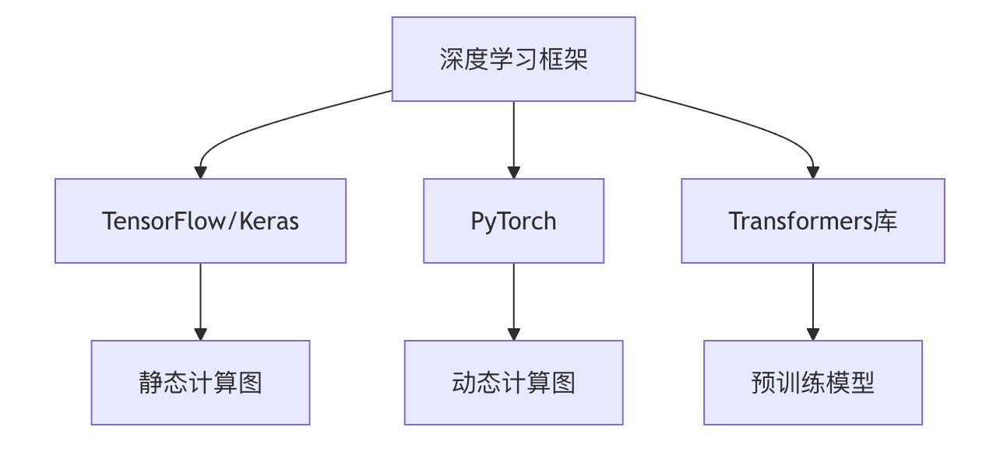
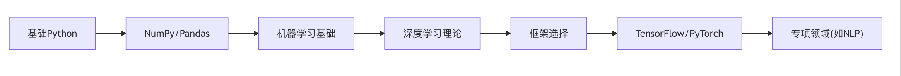

深層学習フレームワーク徹底解説：TensorFlowからモデルデプロイまで
深層学習フレームワーク概要
深層学習フレームワークは現代の人工知能開発の基盤であり、開発者がニューラルネットワークモデルを効率的に構築・訓練・デプロイできるよう、一連のツールとインターフェースを提供しています。主流の深層学習フレームワークには以下のものがあります：
- TensorFlow/Keras：Googleが開発した産業グレードのフレームワークで、本番環境に適しています
- PyTorch：Facebookが主導する研究向けフレームワークで、動的計算グラフの特性に優れています
- Transformers ライブラリ：HuggingFaceが公開した自然言語処理専用フレームワーク

TensorFlow/Keras 詳細解説
コアアーキテクチャ
TensorFlowは階層設計を採用しています：
- フロントエンドAPI：Python、C++などの言語インターフェース
- 計算グラフ：演算を有向非巡回グラフ(DAG)として表現
- 分散ランタイム：CPU/GPU/TPUをまたいで実行
Keras高レベルAPI
KerasはTensorFlowの公式高レベルAPIとして、モデル構築プロセスを簡素化します：
例
from tensorflow import keras
from tensorflow.keras import layers
model = keras.Sequential([
layers.Dense(64, activation='relu', input_shape=(784,)),
layers.Dense(10, activation='softmax')
])
model.compile(optimizer='adam',
loss='sparse_categorical_crossentropy',
metrics=['accuracy'])
from tensorflow.keras import layers
model = keras.Sequential([
layers.Dense(64, activation='relu', input_shape=(784,)),
layers.Dense(10, activation='softmax')
])
model.compile(optimizer='adam',
loss='sparse_categorical_crossentropy',
metrics=['accuracy'])
主要機能の比較
| 特性 | TensorFlow | Keras |
|---|---|---|
| 抽象度 | 低レベル | 高レベル |
| 使いやすさ | やや複雑 | 簡単 |
| 柔軟性 | 高 | 中程度 |
| 典型的な用途 | 本番デプロイ | 迅速なプロトタイピング |
PyTorch徹底解説
動的計算グラフの利点
PyTorchの核となる特徴は動的計算グラフ(Define-by-Run)であり、これにより：
- デバッグがより直感的（標準のPythonデバッグツールを使用可能）
- ネットワーク構造を動的に変更可能
- Pythonのプログラミング習慣により適合
典型的なモデル構築例
例
import torch
import torch.nn as nn
import torch.optim as optim
class Net(nn.Module):
def __init__(self):
super(Net, self).__init__()
self.fc1 = nn.Linear(784, 64)
self.fc2 = nn.Linear(64, 10)
def forward(self, x):
x = torch.relu(self.fc1(x))
x = torch.softmax(self.fc2(x), dim=1)
return x
model = Net()
criterion = nn.CrossEntropyLoss()
optimizer = optim.Adam(model.parameters())
import torch.nn as nn
import torch.optim as optim
class Net(nn.Module):
def __init__(self):
super(Net, self).__init__()
self.fc1 = nn.Linear(784, 64)
self.fc2 = nn.Linear(64, 10)
def forward(self, x):
x = torch.relu(self.fc1(x))
x = torch.softmax(self.fc2(x), dim=1)
return x
model = Net()
criterion = nn.CrossEntropyLoss()
optimizer = optim.Adam(model.parameters())
自動微分システム
PyTorchの自動微分の動作原理：
- 順伝播時に演算グラフを記録
- 逆伝播時に勾配を自動計算
- を通じて
.backward()勾配計算をトリガー
Transformersライブラリ特集解説
事前学習モデルエコシステム
HuggingFace Transformersは豊富な事前学習モデルを提供しています：
- BERT (Google)
- GPT (OpenAI)
- RoBERTa (Facebook)
- T5 (Google)
典型的な使用フロー
例
from transformers import AutoTokenizer, AutoModel
# 事前学習モデルとトークナイザーを読み込み
tokenizer = AutoTokenizer.from_pretrained("bert-base-uncased")
model = AutoModel.from_pretrained("bert-base-uncased")
# テキスト処理
inputs = tokenizer("Hello world!", return_tensors="pt")
outputs = model(**inputs)
# 事前学習モデルとトークナイザーを読み込み
tokenizer = AutoTokenizer.from_pretrained("bert-base-uncased")
model = AutoModel.from_pretrained("bert-base-uncased")
# テキスト処理
inputs = tokenizer("Hello world!", return_tensors="pt")
outputs = model(**inputs)
モデルファインチューニング手法
例
from transformers import Trainer, TrainingArguments
training_args = TrainingArguments(
output_dir='./results',
num_train_epochs=3,
per_device_train_batch_size=16
)
trainer = Trainer(
model=model,
args=training_args,
train_dataset=train_dataset
)
trainer.train()
training_args = TrainingArguments(
output_dir='./results',
num_train_epochs=3,
per_device_train_batch_size=16
)
trainer = Trainer(
model=model,
args=training_args,
train_dataset=train_dataset
)
trainer.train()
モデルデプロイと最適化
デプロイ方式の比較
| 方式 | 適用シーン | ツールチェーン |
|---|---|---|
| ローカルサービス | 企業内アプリケーション | Flask + ONNX |
| クラウドデプロイ | インターネットサービス | AWS SageMaker |
| エッジコンピューティング | IoTデバイス | TensorRT |
| モバイル端末 | スマートフォンアプリ | Core ML |
モデル最適化技術
- **量子化(Quantization)**：
- FP32をINT8に変換
- メモリ使用量を75%削減
- 推論速度を高速化
例
import tensorflow as tf
converter = tf.lite.TFLiteConverter.from_saved_model(saved_model_dir)
converter.optimizations = [tf.lite.Optimize.DEFAULT]
tflite_quant_model = converter.convert()
converter = tf.lite.TFLiteConverter.from_saved_model(saved_model_dir)
converter.optimizations = [tf.lite.Optimize.DEFAULT]
tflite_quant_model = converter.convert()
**プルーニング(Pruning)**：
- 重要でないニューロン接続を除去
- 通常60〜90%のパラメータを削減可能
- モデルの精度をほぼ維持
知識蒸留：
- 大規模モデル(teacher)が小規模モデル(student)を指導
- 大規模モデルの知識を保持
- モデルサイズを大幅に削減
フレームワーク選択ガイド
決定要因の分析
プロジェクトの種類：
- 研究プロトタイプ → PyTorch
- 本番システム → TensorFlow
- NLPタスク → Transformers
チームのスキル：
- Pythonに精通 → PyTorch
- Java/C++のバックグラウンド → TensorFlow Serving
ハードウェア環境：
- TPU → TensorFlow
- 複数GPU → PyTorch Distributed
学習ロードマップの提案

実践演習
演習1：画像分類の比較
TensorFlowとPyTorchをそれぞれ使用して同じCNNモデルを実装し、CIFAR-10データセット上で：
- コードの複雑さを比較
- トレーニング時間を記録
- テスト精度の差異を確認
演習2：モデル変換
PyTorchモデルを以下に変換：
- ONNX形式
- TensorFlow Lite形式
- 変換前後の推論速度を比較
演習3：最適化の実践
事前学習モデルを1つ選択：
- 量子化技術を適用
- プルーニングを実施
- 最適化前後のモデルサイズと推論速度の変化を測定
本チュートリアルを通じて、主流の深層学習フレームワークの核となる特徴と適用シーンを習得できたはずです。深層学習プログラミングはPyTorchから始めることをお勧めし、基礎が固まったらプロジェクトのニーズに応じて他のフレームワークに拡張してください。フレームワークはあくまでツールであり、真の価値はそれらを使って解決する現実の問題にあります。
その他の拡張